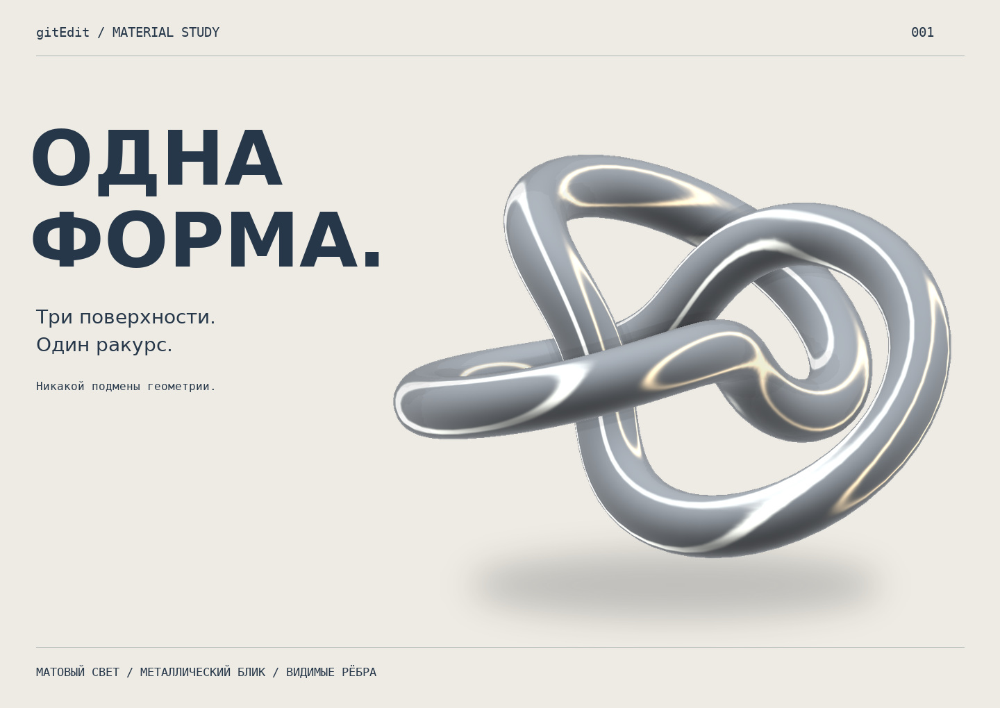
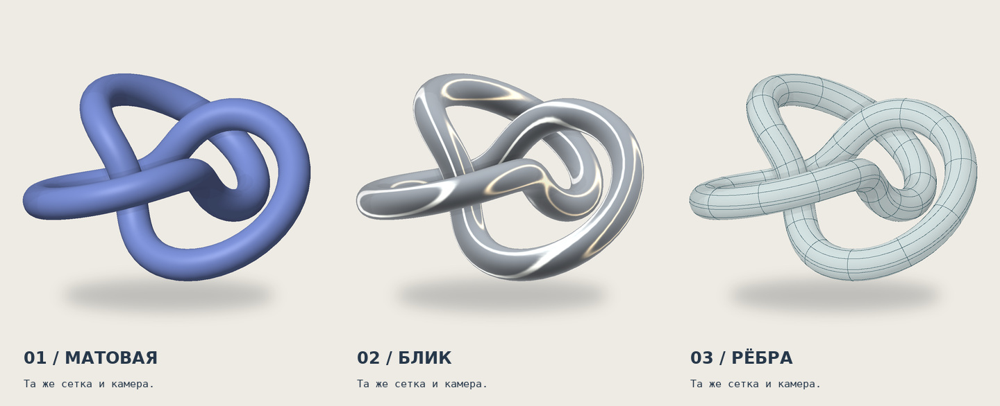

<!doctype html><html lang="ru"><meta charset="utf-8"><meta name="viewport" content="width=device-width"><title>Материальная проба</title><style>body{margin:0;padding:20px;background:#192737;color:#eee;font:18px system-ui}main{max-width:1000px;margin:auto}img{width:100%;height:auto;display:block}a{color:#b7c9ff}a:focus-visible{outline:3px solid orange}p{line-height:1.5}@media(max-width:640px){body{padding:8px}}</style><main><a href="../../atlas/materials.md"><picture>
  <source media="(max-width: 640px)" srcset="../../assets/materials/hero-mobile.jpg">
  
</picture></a>

<picture>
  <source media="(max-width: 640px)" srcset="../../assets/materials/comparison-mobile.jpg">
  
</picture>

<p>Статичная цветопроба. Веб-рендерера внутри нет.</p></main></html>